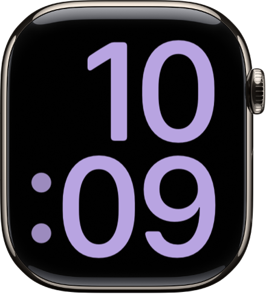

当你需要以最大的文字显示时使用此表盘。当添加一个复杂功能时，它将充满整个屏幕。
下方的文件数包括本地化资源。固件名称键能确认包的归属；组件的圆屏点击边界、亮屏过渡与 AOD 对照均待设备验证。
NTKExtraLargeFaceBundle.bundleEXTRA_LARGE_FACE_DESCRIPTION色组与设备条件 ExtraLargeFace-Gossamer.color.plist 共享色组与默认值
+[NTKExtraLargeFace tritium_burnInFaceName];-[NTKExtraLargeFaceView tritium_createFaceAnimator];-[NTKExtraLargeFaceView _tritium_timeLabel];-[NTKExtraLargeFaceView _prepareWristRaiseAnimation];-[NTKExtraLargeFaceView _performWristRaiseAnimation];-[NTKExtraLargeFaceView tritium_timeViews];-[NTKExtraLargeRichFaceView _paletteApplyingTritiumFractionToPalette:];-[NTKExtraLargeRichFaceView tritium_createFaceAnimator];-[NTKExtraLargeFaceView _updateMinuteUpdates];-[NTKExtraLargeFaceView _applyTransitionFraction:fromOption:toOption:forCustomEditMode:slot:];-[NTKExtraLargeFaceView tritium_createFaceAnimator];-[NTKExtraLargeFaceView _richComplicationSecondaryColor];-[NTKExtraLargeFaceView _prepareWristRaiseAnimation];-[NTKExtraLargeFaceView _performWristRaiseAnimation];-[NTKExtraLargeFaceView _configureForTransitionFraction:fromEditMode:toEditMode:];-[NTKExtraLargeFaceView setOverrideDate:duration:];-[NTKExtraLargeFaceView _applyComplicationTransitionFraction:fromColorPalette:toColorPalette:];-[NTKExtraLargeRichFaceView _applyTransitionFraction:fromOption:toOption:forCustomEditMode:slot:];-[NTKExtraLargeRichFaceView tritium_createFaceAnimator];-[NTKExtraLargeRichFaceView _configureForTransitionFraction:fromEditMode:toEditMode:];+[NTKExtraLargeFace _faceClassOfFaceWithRichComplicationSlotsForDevice:];+[NTKExtraLargeFace _complicationSlotDescriptors];+[NTKExtraLargeFace _richComplicationSlotsForDevice:];+[NTKExtraLargeFace _orderedComplicationSlots];+[NTKExtraLargeFace _defaultSelectedComplicationSlotForDevice:];-[NTKExtraLargeFace applyPreviewConfigurationWithFamily:faceColor:];-[NTKExtraLargeFace _localizedNameForComplicationSlot:];-[NTKExtraLargeFace _numberOfOptionsForCustomEditMode:slot:];-[NTKExtraLargeFace _defaultOptionForCustomEditMode:slot:];-[NTKExtraLargeFace _indexOfOption:forCustomEditMode:slot:];-[NTKExtraLargeFace _optionAtIndex:forCustomEditMode:slot:];-[NTKExtraLargeFaceView _keylineCornerRadiusForComplicationSlot:];-[NTKExtraLargeFaceView colorScheme];-[NTKExtraLargeFaceView setColorScheme:];-[NTKExtraLargeFaceView _applyTransitionFraction:fromOption:toOption:forCustomEditMode:slot:];-[NTKExtraLargeFaceView layoutSubviews];-[NTKExtraLargeFaceView _applyBreathingFraction:forCustomEditMode:slot:];-[NTKExtraLargeFaceView _layoutSmallTimeLabel];-[NTKExtraLargeFaceView _configureSmallTimeLabelColors];-[NTKExtraLargeFaceView _applyOption:forCustomEditMode:slot:];-[NTKExtraLargeFaceView _prepareForEditing];-[NTKExtraLargeFaceView _applyColor:toRichComplicationView:withFraction:isMonochrome:];-[NTKExtraLargeFaceView _cleanupAfterEditing];-[NTKExtraLargeFaceView _richComplicationSecondaryColor];-[NTKExtraLargeFaceView _layoutForegroundContainerView];-[NTKExtraLargeFaceView setComplicationIsVisible:];-[NTKExtraLargeFaceView _statusBarOffsetForComplication];-[NTKExtraLargeFaceView _updateComplicationVisibility];-[NTKExtraLargeFaceView _configureLargeTimeLabelColors];-[NTKExtraLargeFaceView _complicationView];-[NTKExtraLargeFaceView _applyFaceColorToRichComplicationView:];-[NTKExtraLargeFaceView _configureComplicationView:forSlot:];-[NTKExtraLargeFaceView _loadLayoutRules];-[NTKExtraLargeFaceView _legacyShouldSwapGraphicCircularComplicationColors];-[NTKExtraLargeFaceView _newLegacyViewForComplication:family:slot:];-[NTKExtraLargeFaceView complicationIsVisible];-[NTKExtraLargeFaceView _noteComplicationVisibilityChanged];-[NTKExtraLargeFaceView _applyComplicationTransitionFraction:fromColorPalette:toColorPalette:];-[NTKExtraLargeFaceView _statusBarOffsetForComplicationBackground];-[NTKExtraLargeFaceView _applyRubberBandingFraction:forCustomEditMode:slot:];+[NTKExtraLargeRichFace _complicationSlotDescriptors];+[NTKExtraLargeRichFace _richComplicationSlotsForDevice:];-[NTKExtraLargeRichFace complicationsColorRenderingUsage];-[NTKExtraLargeRichFace _defaultOptionForCustomEditMode:slot:];-[NTKExtraLargeRichFaceView _homeScreenDateLabelColor];-[NTKExtraLargeRichFaceView _homeScreenBackgroundColor];-[NTKExtraLargeRichFaceView createFaceColorPalette];-[NTKExtraLargeRichFaceView setEditingComplicationsPalette:];-[NTKExtraLargeRichFaceView _applyTransitionFraction:fromOption:toOption:forCustomEditMode:slot:];-[NTKExtraLargeRichFaceView _paletteApplyingTritiumFractionToPalette:];-[NTKExtraLargeRichFaceView _applyBreathingFraction:forCustomEditMode:slot:];-[NTKExtraLargeRichFaceView _configureSmallTimeLabelColors];-[NTKExtraLargeRichFaceView _applyOption:forCustomEditMode:slot:];-[NTKExtraLargeRichFaceView setLastAppliedColorPalette:];-[NTKExtraLargeRichFaceView lastAppliedColorPalette];-[NTKExtraLargeRichFaceView _configureLargeTimeLabelColors];-[NTKExtraLargeRichFaceView _configureComplicationView:forSlot:];-[NTKExtraLargeRichFaceView _applyColorsFromPalette:];-[NTKExtraLargeRichFaceView _applyColorsFromLastAppliedColorPalette];-[NTKExtraLargeRichFaceView _noteComplicationVisibilityChanged];-[NTKExtraLargeRichFaceView _applyRubberBandingFraction:forCustomEditMode:slot:];-[NTKExtraLargeRichFaceView editingComplicationsPalette];